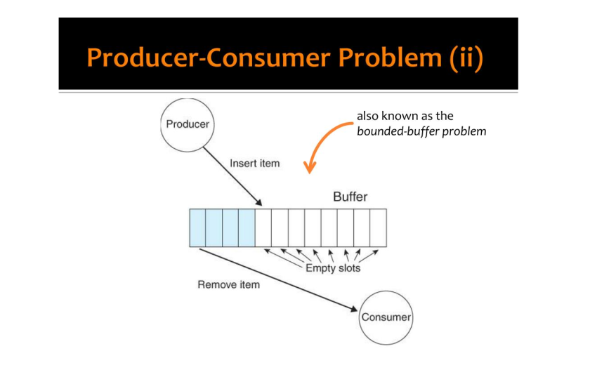

Terminale NSI : Le problème du producteur et du consommateur
Contents
Terminale NSI : Le problème du producteur et du consommateur#
Introduction#
Dans ce problème classique de programmation concurrente on considère 3 éléments :
Un tampon de stockage (buffer) dans lequel on peut écrire, lire ou supprimer des données.
Un producteur, qui est un thread qui écrit des données dans le tampon tant qu’il n’est pas plein.
Un consommateur, qui est un thread qui lit et supprimme des données du tampon.
Il est important de noter que le producteur et le consommateur sont des threads et n’interviennent donc pas de façon synchronisée.

Modèle élémentaire#
Base#
Le tampon est une liste python partagée comme variable globale.
Le producteur est une fonction qui écrit dans le tampon des nombres entiers aléatoires. Cette fonction admet un paramètre qui est la taille maximale du tampon. A chaque écriture le tampon est affiché
Le consommateur est une fonction qui supprimme et affiche le dernier élément du tampon, sauf si il est vide.
from threading import Thread
from random import randint
def producteur(n):
"A compléter"
global tampon
pass
def consommateur():
"A compléter"
global tampon
pass
tampon = []
produit = Thread(target = producteur, args = [10])
consomme = Thread(target = consommateur)
produit.start()
consomme.start()
Temporisation#
Améliorer le résultat en ajoutant une pause ( sleep ) dans chaque thread.
Étudier l’influence des temps de pause sur la taille du tampon
Simuler un situation plus réaliste avec des temps de pause aléatoires.
Verrouillage en lecture-écriture#
Avec le programme actuel il est possible que les deux threads interviennent en même temps sur le tampon, provoquant un résultat incohérent.
Corriger ce problème en utilisant un verrou global operation autour des opérations de lecture-écriture sur le tampon.
Synchronisation des threads#
Position du problème#
Avec le programme actuel les deux threads exécutent une boucle infinie en vérifiant à chaque fois si il est possible d’écrire ou de lire sur le tampon.
Si par exemple le tampon est plein le producteur utilise tout son temps de CPU à vérifier qu’il est toujours plein.
C’est la situation d’attente active ( busy-wait).
L’inconvénient est de consommer du temps de CPU à la place d’être en sommeil.
Utilisation d’un verrou de synchronisation#
On va utiliser un verrou plein pour signifier que le tampon est plein.
Le producteur tentera d’abord d’acquérir le verrou plein.
Si il y parvient c’est que le tampon n’est pas plein. Il peut alors écrire et relâcher ou non le verrou ( selon que le tampon est plein ou pas ).
Si il n’y parvient pas c’est que le tampon est plein et il reste en attente sans consommer de temps CPU.
Le consommateur testera le verrou plein à chaque itération. Si il est verrouillé il sera alors relâché.
Modifier le programme précédent pour implémenter cette technique.
Perfectionnement#
Adapter la méthode précédente avec un verrou vide pour éviter l’état d’attente active du consommateur lorsque le tampon est vide.
Exercices#
Exercice 1#
On suppose maintenant que le consommateur ne peut consommer que lorsque le tampon est plein.
Le consommateur vide alors entièrement le tampon.
Adapter le programme précédent en synchronisant 2 threads qui réalisent cette situation.
Exercice 2#
Un thread écrit les nombres entiers consécutifs dans une variable globale.
Un thread affiche en boucle la valeur de cette variable globale.
Synchroniser les deux threads pour que chaque nombre soit affiché une fois et une seule.